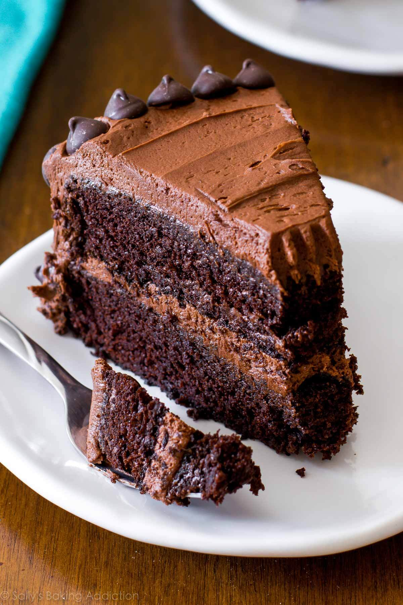

Home
Triple Chocolate Cake

Description
This pictured cake is a combination of chocolate buttercream and
mock-devil’s food cake. You know the devil’s food chocolate cake you
get at a restaurant or even from a box mix? This is that exact cake,
only completely homemade.
This is, without a doubt, the best chocolate cake I’ve ever had.
And judging by your feedback in the reviews, I’m confident you’d
say the same thing!
Ingredients
Cake
- 1 and 3/4 cups (219g) all-purpose flour (spooned & leveled)
- 3/4 cup (64g) unsweetened natural cocoa powder
- 1 and 3/4 cups (350g) granulated sugar
- 2 teaspoons baking soda
- 1/2 cup (113g/120ml) vegetable oil (or canola oil or melted coconut oil)
- 2 large eggs, at room temperature
- 2 teaspoons pure vanilla extract
- 1 cup (240g/ml) buttermilk, at room temperature
- 1 cup (240g/ml) freshly brewed strong hot coffee or hot water
Chocolate Buttercream
- 1 and 1/4 cups (282g) unsalted butter, softened to room temperature
- 3 and 1/2 cups (420g) confectioners’ sugar
- 3/4 cup (64g) unsweetened cocoa powder (natural or Dutch-process)
- 3–5 Tablespoons (45–75g/ml) heavy cream (or half-and-half or milk),
at room temperature
- 1 teaspoon pure vanilla extract
- 1/4 teaspoon salt
- optional for decoration: semi-sweet chocolate chips
Steps
- Preheat the oven to 350°F (177°C). Grease two 9-inch cake pans,
line with parchment paper rounds, then grease the parchment paper. Parchment
paper helps the cakes seamlessly release from the pans.
- Make the cake: Whisk the flour, cocoa powder, sugar, baking soda, baking powder,
salt, and espresso powder (if using) together in a large bowl. Set aside.
Using a handheld or stand mixer fitted with a whisk attachment (or you can
use a whisk) mix the oil, eggs, and vanilla together on medium-high speed until
combined. Add the buttermilk and mix until combined. Pour the dry ingredients
into the wet ingredients, add the hot coffee/water, and whisk or beat on low
speed until the batter is completely combined. Batter is thin.
- Divide the batter evenly between the prepared pans. Bake for 23–26 minutes or
until a toothpick inserted in the center comes out clean. (Note: Even if
they’re completely done, the cooled cakes may *slightly* sink in the center.
Cocoa powder is simply not as structurally strong as all-purpose flour and
can’t hold up to all the moisture necessary to make a moist-tasting chocolate
cake. It’s normal!)
- Cool the cakes in the pans set on a cooling rack for 1 hour. Run a knife
around the edges to help loosen the sides, remove the cakes from the pans,
peel off the parchment, and place on the cooling rack to finish cooling.
- Make the buttercream: With a handheld or stand mixer fitted with a paddle
attachment, beat the butter on medium speed until creamy—about 2 minutes.
Add confectioners’ sugar, cocoa powder, 3 Tablespoons heavy cream, vanilla
extract, and salt. Beat on low speed for 30 seconds, then increase to high
speed and beat for 1 full minute. Do not over-whip. Add 1/4 cup more confectioners’
sugar or cocoa powder if frosting is too thin or 1–2 more Tablespoons of cream if
frosting is too thick. Taste. Add another pinch of salt if desired.
- If cooled cakes are domed on top, use a large serrated knife to slice
a thin layer off the tops to create a flat surface. This is called “leveling” the
cakes. Discard or crumble over finished cake. Place 1 cake layer on your cake stand
or serving plate. Evenly cover the top with frosting. Top with 2nd layer and spread
remaining frosting all over the top and sides. I use an icing spatula and bench
scraper for the frosting. Garnish with chocolate chips, if desired.
- Refrigerate uncovered cake for at least 30–60 minutes before slicing to help set
the shape. After that, you can serve the cake or continue refrigerating for up to
4–6 hours before serving. Cake can be served at room temperature or chilled.
- Cover leftover cake tightly and store in the refrigerator for up to 5 days. I
like using a cake carrier for storing and transporting.